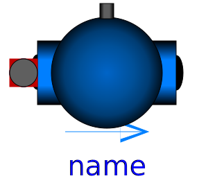
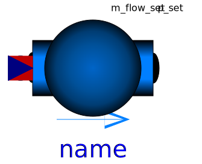

| Name | Description |
|---|---|
| varying cylindric volume depending on the position of the piston | |
|  Pump | Centrifugal pump with mechanical connector for the shaft |
|  ControlledPump | Centrifugal pump with ideally controlled mass flow rate |
| Centrifugal pump with ideally controlled speed | |
| Base classes used in the Machines package (only of interest to build new component models) |